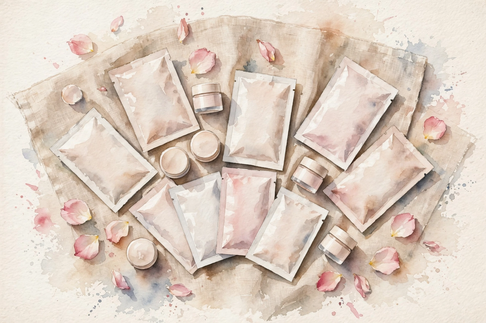

トップ ＞ スキンケア ＞ サンプル・トライアルセットの使い方と見極め方
サンプル・トライアルセットの使い方と見極め方

新しいアイテムを買う前に、サンプルやトライアルセットで試したい。そう考える方は多いと思います。ただ、試す期間をどう使うかで、得られる情報の量は大きく変わります。この記事では、試し方と見極め方の手順を整理します。
まず「何回分あるか」を数える
サンプル1回分で分かるのは、テクスチャーと香り、塗った直後の感触までです。朝と夜の違いや、数日続けたときの感触までは、1回分では判断できません。トライアルセットの場合は、内容量と1回の使用量から「何日分あるか」を計算しておくと、試す計画が立てられます。
本品に換算して何週間分か、という見方も大切です。試す期間が短い場合は、「質感と香りを確認する期間」と割り切って使う方が、判断を誤りにくくなります。
一度に全部を変えず、記録をつける
見極めのコツは、変えるものを1点に絞ることです。化粧水も美容液もクリームも同時に変えてしまうと、感触が変わった理由が切り分けられません。いつもの手順に1点だけ差し替えて、数日使う。その繰り返しが確実です。
記録は、日付・使った量・朝起きたときの手触り・気になったこと、を一行ずつ書く程度で十分です。私は施術のカルテと同じで、短くても「書いてある」ことが後の判断を助けると感じています。
トライアルの「条件表示」もあわせて読む
トライアルセットの中には、申し込むと定期購入に移行する形のものや、初回のみの価格が大きく表示されているものがあります。試すことと、買い続ける契約は別の話です。申し込む前に、移行の有無、2回目以降の価格、休止・解約の方法がどこに書かれているかを確認しておきましょう。
試す期間は、買い物の失敗を減らすための投資のようなものです。回数を数え、1点ずつ変え、記録する。この3つで、サンプルの価値は何倍にもなります。
試す期間の決め方についても補足します。感触の確認は、朝と夜の両方で試すのが理想です。朝はその後のメイクや外出との兼ね合い、夜は一日の終わりの肌の状態で、同じアイテムでも感じ方が変わるためです。試す日数は、最低でも2〜3日、できれば1週間を目安にすると、曜日による生活リズムの違いも含めて判断できます。週末だけ試して平日に合わない、という行き違いも減ります。サンプルの量が限られる場合は、朝か夜のどちらかに絞って、その代わり日数を確保する方が、判断の材料はそろいます。試す期間を先に決めておくことが、見極めの精度を上げる土台になります。
セラフィナ「試すときは1点ずつ、メモつきで。それが本品選びの近道だね」

セラフィナ｜美容の道具箱の案内役
「量と表示が分かれば、美容は失敗しない。」——セラフィナと白猫のモコが、買う前のチェックポイントを案内します。綺麗になりたい気持ちに正直に、でも表示は冷静に読むのが、このサイトの約束です。